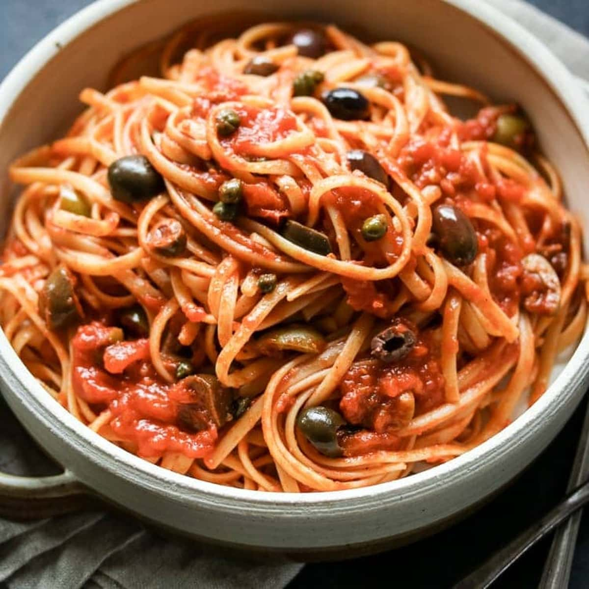

Puttanesca Recipe

Ingredients
- 1 lb spaghetti
- 2 tbsp olive oil
- 4 cloves garlic, minced
- 1 can (14 oz) diced tomatoes
- 1/2 cup black olives, pitted and sliced
- 2 tbsp capers, rinsed and drained
- 1/4 tsp red pepper flakes (optional)
- Salt and pepper to taste
- Fresh parsley, chopped (for garnish)
- Parmesan cheese, grated (for serving)
Instructions
- Cook spaghetti according to package instructions until al dente.
- In a large skillet, heat olive oil over medium heat.
- Add minced garlic and sauté for 1 minute until fragrant.
- Add diced tomatoes, olives, capers, and red pepper flakes (if using).
- Simmer for about 10 minutes, stirring occasionally.
- Season with salt and pepper to taste.
- Drain spaghetti and add it to the skillet, tossing to combine.
- Serve hot, garnished with parsley and grated Parmesan cheese.
Home